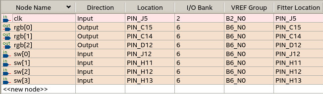
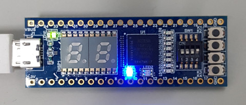

參考資訊：
https://www.stepfpga.com/doc/step-max10
main.vhd
library ieee;
use ieee.numeric_std.all;
use ieee.std_logic_1164.all;
use ieee.std_logic_unsigned.all;
entity main is
port(
clk: in std_logic;
sw: in unsigned(3 downto 0);
rgb: out unsigned(2 downto 0));
end main;
architecture logic of main is
signal clk_div:integer:=1;
signal clk_cnt:integer:=0;
signal rgb_cnt:unsigned(2 downto 0):=(others => '0');
begin
process(clk) is
begin
if (clk'event and clk = '1') then
clk_cnt<= clk_cnt + 1;
if clk_cnt > (12000000 / clk_div) then
clk_cnt<= 0;
rgb_cnt<= rgb_cnt + 1;
rgb<= rgb_cnt;
end if;
end if;
end process;
process(sw) is
begin
clk_div<= to_integer(sw) + 1;
end process;
end logic;
當觸發條件成立，兩個各別的副程式可以同時執行，這也是FPGA平行處理的觀念，因為它的形式是硬體電路
腳位

